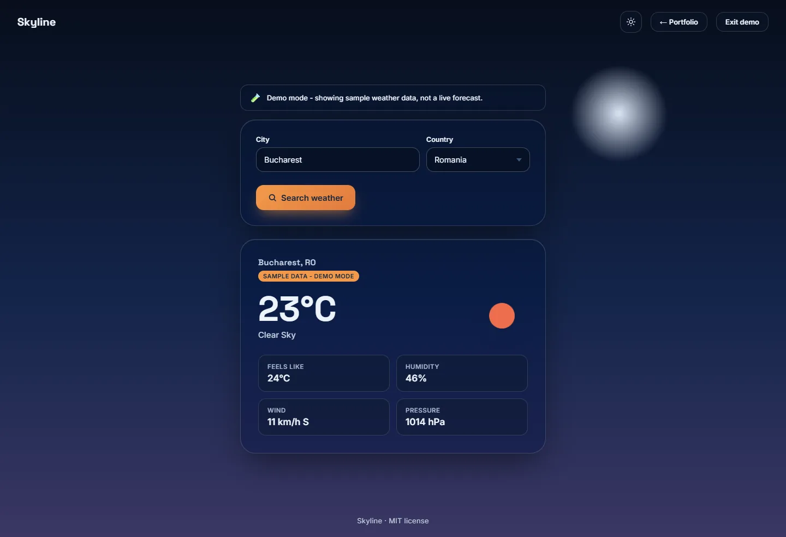
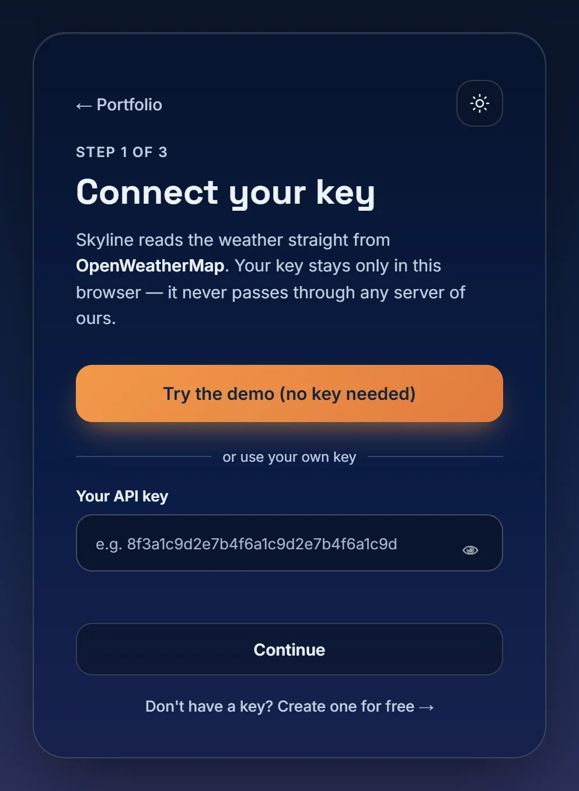

Skyline Weather
Type in a city and see its current weather over an animated sky, by day or by night. The design is the point: the cards are frosted glass, so what shows through changes how readable the text is, and I measured that on the real screen and fixed every text that was too faint. Try it without a key: "Try the demo" shows sample data, clearly labelled.


What it does
Shows the current weather for a city: temperature, feels-like, humidity, wind and pressure. A day and a night theme, and a demo mode that needs no key.
My role
Product idea, UX, the design and the contrast checks. The code was written with an AI assistant (Claude).
Proof
Text contrast measured on real pixels, lowest 5.64:1 at night · 19 unit tests on every push.
Status
Live · MIT · source on GitHub.
Design case study: a sky you can read
The look is a sky: frosted-glass cards over an animated CSS sky with a sun and drifting clouds, and a sunset orange used sparingly for the one main action. The catch with glass is that the CSS alone doesn't tell you the contrast: what shows through the card changes it.
Design iteration (November 2026)
Two problems: the first screen asks for the visitor's own weather key before they've seen anything, so someone without a key met a form first, and several texts were too faint on the glass. I measured contrast on the real pixels of the screen, not from the CSS values, then fixed it at the cause:
- The demo comes first, as the orange main button, with "or use your own key" and the key form below it.
- Secondary and tertiary text got darker: from 2-3.5:1 to about 4.8:1 or more.
- The orange buttons got dark text instead of white, which measured about 2.3:1.
- The "Sample data" tag became an orange pill with dark text; orange text on the glass was about 1.2:1.
- Error text became a darker red: from about 3.4:1 to 5.1-6.3:1.


A night theme, checked the same way
A button on both screens switches to a night sky: deep navy to dusk purple, the sun turned into a pale moon glow, dark glass and light text. The orange buttons keep their dark text. On a first visit the system's dark or light setting decides, and the choice is saved in that browser. I measured the text on the real pixels again, with the error message and the demo card showing, on desktop and phone: every text passes WCAG AA contrast, and the lowest at night is 5.64:1.
What I checked, and what it found
Besides the contrast measurements, the logic has automated tests and I checked the screens in a browser.
- A "broken" weather icon that wasn't. A plain orange circle looked like a broken image. The real network request, in the browser's developer tools, showed it was the weather service's own minimalist "clear sky" icon. Lesson: check the real request before assuming a bug.
- A city name typed as code. The city name was shown on the page as typed, so markup in it could have run. It is now escaped and shown as text, and a test covers it. Whatever is typed as the city also can't add extra settings to the request.
- Tests that can fail. When the logic moved into its own file, I broke it on purpose in 8 ways, and each time at least one test failed. A test that never fails proves nothing.
How it's built
Plain HTML, CSS and JavaScript files, with no framework, no build step and nothing to install. It calls the OpenWeatherMap weather service directly from the visitor's browser.
- Each visitor brings their own key. The app doesn't hold one shared key that could leak or hit usage limits. Each person pastes in their own free OpenWeatherMap key; there's no account and no server in between. Developers call this pattern BYOK (bring your own key).
- The trade-off is stated, not hidden. The key is remembered in the browser (localStorage) so nobody has to re-enter it, which means anyone with access to that device's developer tools could read it. That is accepted for a personal project. A real product would route requests through a small server instead.
- Rules from the server against injected code. The page's styles and scripts live in their own files, so a Content-Security-Policy (a list of what the page may run and load) can block any code injected into it.
- Logic kept apart from the page. The parts with no page behind them (wind direction, error messages, demo data, the theme choice) are in their own file, with unit tests that run on every push.
What I haven't done yet
- No usability testing with other people.
- The sky is animated, so contrast was measured on screenshots, not on every moment of the animation.
- The tests cover the logic only. The screens (login, search, the card) were checked by hand in a browser, with no automated test.
- The key is stored in plain text in the browser. Next step for a real product: a small server that holds it.